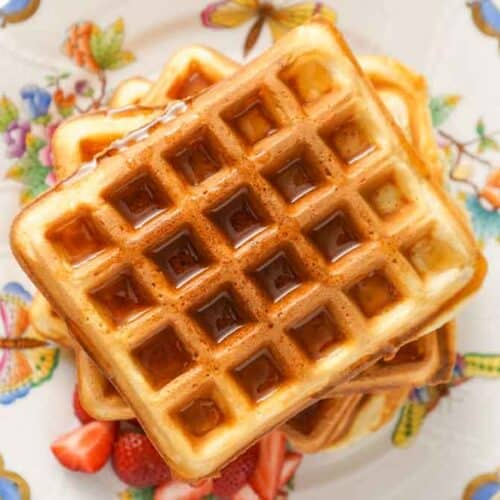

Waffles caseros

Los waffles son una de las recetas más populares del mundo gracias a su sabor, su textura y la gran cantidad de ingredientes con los que pueden acompañarse. Frutas, chocolate, miel, crema o mermelada son algunas de las opciones más habituales. Su característica forma de cuadrícula permite que los ingredientes se distribuyan de manera uniforme, convirtiendo cada bocado en una deliciosa experiencia.